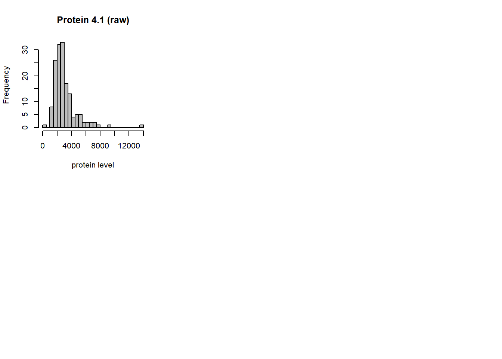
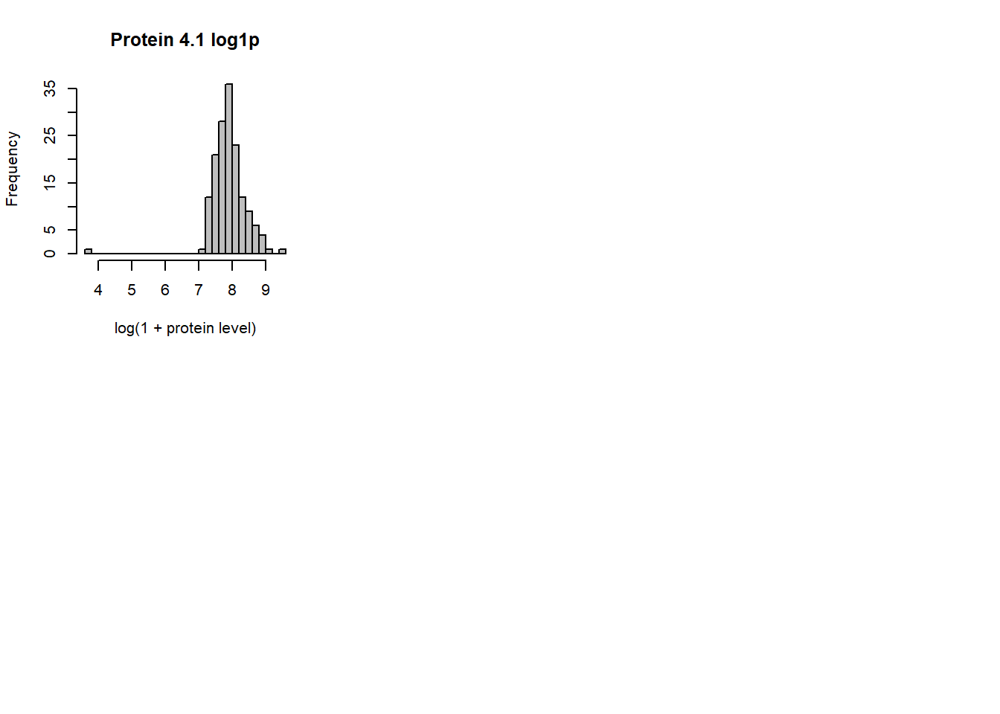
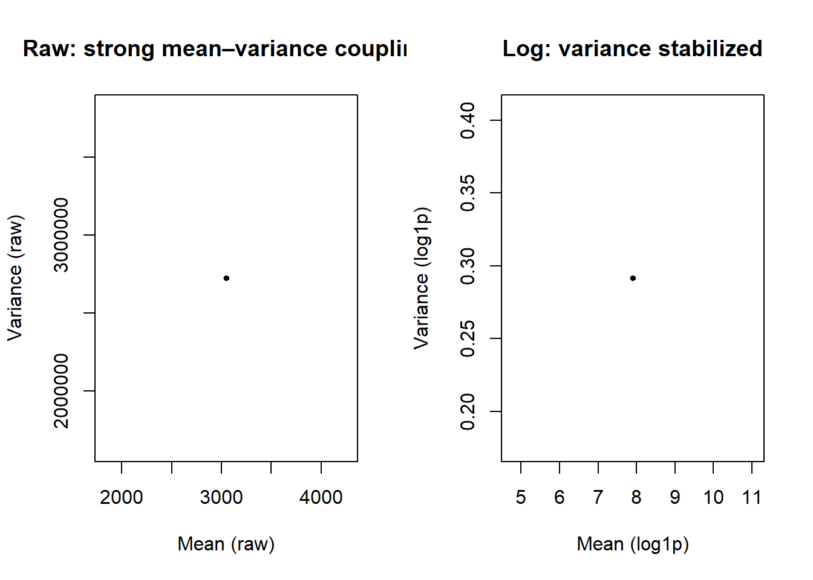
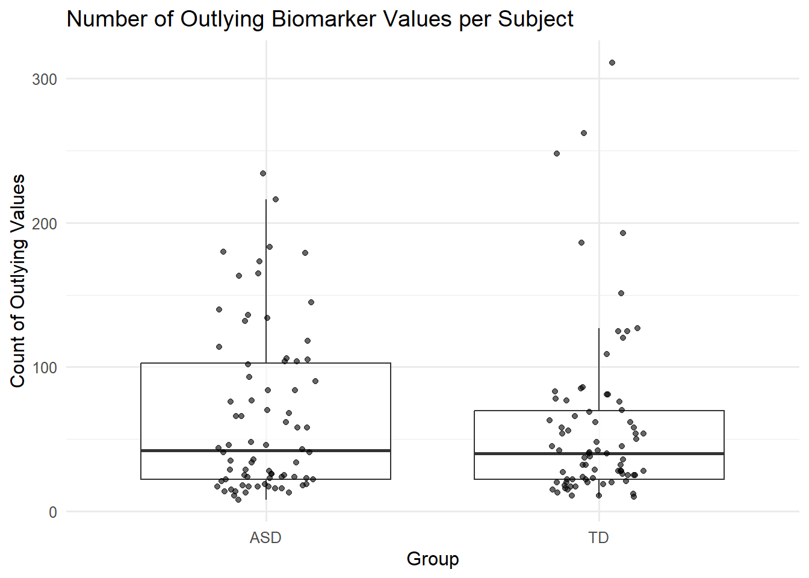
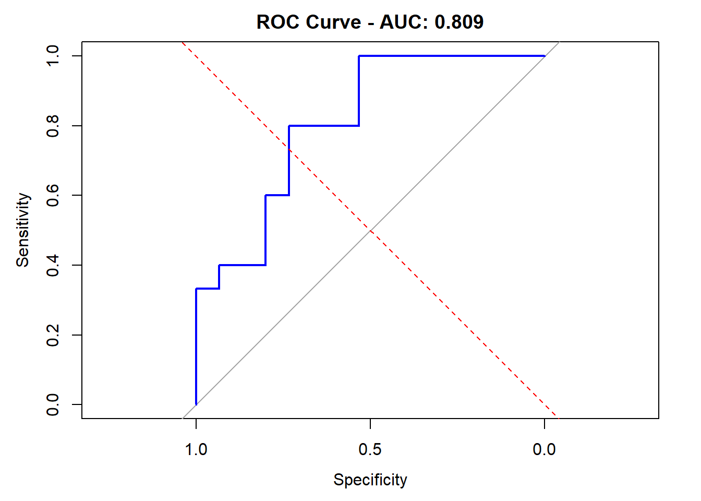
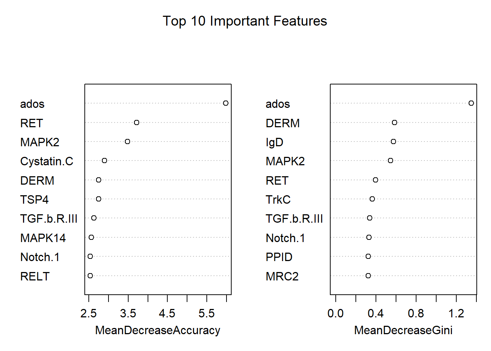

biomarker_raw <- read_csv(here::here("data", "biomarker-raw.csv"), show_col_types = FALSE)Biomarkers of ASD
Abstract
Write a brief one-paragraph abstract that describes the contents of your write-up.
Dataset
Write a brief data description, including: how data were obtained; sample characteristics; variables measured; and data preprocessing. This can be largely based on the source paper and should not exceed 1-2 paragraphs.
Findings
Task 1
num_dat <- biomarker_raw %>% select(where(is.numeric))
# pick a small sample of proteins to visualize (change n if you want)
set.seed(1)
sample_prots <- sample(colnames(num_dat), size = min(6, ncol(num_dat)))
sample_prots[1] "Protein 4.1"# histograms of raw protein values
par(mfrow = c(2, 3))
for (v in sample_prots) {
hist(num_dat[[v]], breaks = 30, main = paste(v, "(raw)"),
xlab = "protein level", col = "grey")
dev.flush()
}
par(mfrow = c(1,1))
Raw protein levels are highly right-skewed. In the raw histograms, most samples sit near the lower end with a long right tail and big outliers. The skewness numbers (skew_raw) are usually large and positive.
# skewness before vs after
sk_tbl <- tibble(
protein = sample_prots,
skew_raw = map_dbl(sample_prots, ~ skewness(num_dat[[.x]], na.rm = TRUE)),
skew_log = map_dbl(sample_prots, ~ {
vals <- num_dat[[.x]]
vals[vals < -1] <- NA
skewness(log1p(vals), na.rm = TRUE)
})
)
sk_tbl# A tibble: 1 × 3
protein skew_raw skew_log
<chr> <dbl> <dbl>
1 Protein 4.1 2.64 -2.51# histograms after log1p transform
par(mfrow = c(2, 3))
for (v in sample_prots) {
vals <- num_dat[[v]]
vals[vals < -1] <- NA
hist(log1p(vals), breaks = 30,
main = paste(v, "log1p"),
xlab = "log(1 + protein level)",
col = "grey")
}
par(mfrow = c(1,1))
After a log transform, distributions look more symmetric. The log1p histograms compress the right tail, and skew_log becomes much closer to 0. This makes many proteins look more normal.
# mean–variance relationship
mean_raw <- sapply(num_dat, function(x) mean(x, na.rm = TRUE))
var_raw <- sapply(num_dat, function(x) var(x, na.rm = TRUE))
mean_log <- sapply(num_dat, function(x) {
x_clean <- ifelse(x < -1, NA, x)
mean(log1p(x_clean), na.rm = TRUE)
})
var_log <- sapply(num_dat, function(x) {
x_clean <- ifelse(x < -1, NA, x)
var(log1p(x_clean), na.rm = TRUE)
})
par(mfrow = c(1,2))
plot(mean_raw, var_raw, pch = 19, cex = .6,
xlab = "Mean (raw)", ylab = "Variance (raw)",
main = "Raw: strong mean–variance coupling")
plot(mean_log, var_log, pch = 19, cex = .6,
xlab = "Mean (log1p)", ylab = "Variance (log1p)",
main = "Log: variance stabilized")
par(mfrow = c(1,1))Variance stabilization. In the raw data, proteins with larger means also have much larger variance. On the log scale, that relationship is flatter, so variability is more comparable across proteins. This helps methods that assume roughly constant variance or are sensitive to scale.
Reduces the influence of extreme values. Log compresses very large measurements so a few high-abundance proteins don’t dominate model fitting or distance calculations.
Handles zeros safely. Using log1p(x) = log(1+x) avoids issues when some proteins have zero (or near zero) values.
summary_tbl <- num_dat %>%
summarise(across(all_of(sample_prots), list(
p50 = ~median(.x, na.rm=TRUE),
mean = ~mean(.x, na.rm=TRUE),
p95 = ~quantile(.x, .95, na.rm=TRUE),
p99 = ~quantile(.x, .99, na.rm=TRUE)
))) %>%
pivot_longer(everything(),
names_to = c("protein","stat"),
names_sep = "_",
values_to = "value") %>%
pivot_wider(names_from = stat, values_from = value)
summary_tbl# A tibble: 1 × 5
protein p50 mean p95 p99
<chr> <dbl> <dbl> <dbl> <dbl>
1 Protein 4.1 2648. 3049. 6363. 8456.We log-transform protein levels because the raw values are strongly rightskewed with heavy tails and heteroscedasticity; logging makes them more symmetric, stabilizes variance, and reduces the impact of outliers—yielding features that are easier for downstream models to learn from.
Task 2
We will approach this task by finding the outliers’ basic distribution parameters, distribution, and their relevant categorical variables. Sub-findings of these three main directions will be presented by graphs.
We first start with finding the number of outliers per subject to help us get an initial view of the outlier’s situation.
if (!"subject_id" %in% names(biomarker_raw)) {
biomarker_raw <- biomarker_raw %>% mutate(subject_id = row_number(), .before = 1)
}
if ("Group" %in% names(biomarker_raw) && !"group" %in% names(biomarker_raw)) {
biomarker_raw <- biomarker_raw %>% rename(group = Group)
}
meta_cols <- c("subject_id", "group", "Target Full Name")
biomarker_raw <- biomarker_raw %>%
mutate(across(-any_of(meta_cols), ~ readr::parse_number(as.character(.x))))
num_cols <- biomarker_raw %>%
select(-any_of(meta_cols)) %>%
select(where(is.numeric)) %>%
names()outlier_limits <- biomarker_raw %>%
select(all_of(num_cols)) %>%
pivot_longer(everything(), names_to = "biomarker", values_to = "value") %>%
group_by(biomarker) %>%
summarize(
Q1 = quantile(value, 0.25, na.rm = TRUE),
Q3 = quantile(value, 0.75, na.rm = TRUE),
IQR = Q3 - Q1,
lower = Q1 - 1.5 * IQR,
upper = Q3 + 1.5 * IQR,
.groups = "drop"
)
outlier_flagged <- biomarker_raw %>%
select(subject_id, group, all_of(num_cols)) %>%
pivot_longer(cols = all_of(num_cols), names_to = "biomarker", values_to = "value") %>%
left_join(outlier_limits, by = "biomarker") %>%
mutate(is_outlier = value < lower | value > upper)
subject_outlier_counts <- outlier_flagged %>%
group_by(subject_id, group) %>%
summarize(n_outliers = sum(is_outlier, na.rm = TRUE), .groups = "drop") %>%
filter(!is.na(group))
summary_by_group <- subject_outlier_counts %>%
group_by(group) %>%
summarize(
mean_outliers = mean(n_outliers),
median_outliers = median(n_outliers),
max_outliers = max(n_outliers),
.groups = "drop"
)
kable(summary_by_group, caption = "Outlier counts per subject, summarized by group")| group | mean_outliers | median_outliers | max_outliers |
|---|---|---|---|
| ASD | 65.34211 | 42 | 234 |
| TD | 58.80769 | 40 | 311 |
The summary table shows that subjects in both groups (ASD and TD) have similar number of outlying biomarker values. Specifically, the ASD group has a mean of about 65 outliers per subject, while the TD group has about 59. In terms of variability, ASD is higher than TD group, as suggested by the median and maximum outlying values.
We then proceed to draw a boxplot to further examine the distribution of the outliers.
ggplot(subject_outlier_counts %>% filter(!is.na(group)),
aes(x = group, y = n_outliers)) +
geom_boxplot(alpha = 0.6, outlier.shape = NA) +
geom_point(position = position_jitter(width = 0.15, height = 0), alpha = 0.6) +
theme_minimal(base_size = 12) +
labs(title = "Number of Outlying Biomarker Values per Subject",
x = "Group", y = "Count of Outlying Values")
Information we can derive from the boxplot aligns with our findings from the previous chart. In terms of distribution, both ASD and TD groups are right-skewed, implying that while most subjects have moderate numbers of outlying biomarker values, a few individuals shows extremely high counts.
The spread is slightly larger for the ASD group, suggesting that it may contains more extreme subjects. Overall, outliers occur in both groups, but variability appears somewhat greater among ASD group.
Thus, we are also interested to identify the specific subjects that are responsible for the variability. Namely, subjects that have extreme outlying values are likely the cause for a greater variability in general. We will move forward to identify the possible subjects.
subject_outlier_counts %>%
filter(!is.na(group)) %>%
arrange(desc(n_outliers)) %>%
head(10) %>%
kable(caption = "Subjects with the most outlying biomarker values")| subject_id | group | n_outliers |
|---|---|---|
| 156 | TD | 311 |
| 149 | TD | 262 |
| 110 | TD | 248 |
| 65 | ASD | 234 |
| 10 | ASD | 216 |
| 79 | TD | 193 |
| 123 | TD | 186 |
| 53 | ASD | 183 |
| 64 | ASD | 180 |
| 62 | ASD | 179 |
This table identifies specific subjects responsible for the extreme values observed in the previous analyses. Subjects 156, 149, and 110 (TD) and 65 and 10 (ASD) present the highest counts of outlying biomarkers, each exceeding 200. These individuals are likely driving the group-level variability seen in the boxplot. Therefore, future preprocessing steps should consider removing or, at least, examining these individuals rather than trimming entire groups.
Conclusively, given that we disable the outlier trimming process, a small subset of participants, both ASD and TD specifically, produce a number of extreme biomarker values. Outliers are slightly more frequent and variable in the ASD group, but the overall distribution suggests that extreme measurements are individual-caused, not group-driven.
Methodological variations
Task 3
We start by examining the raw data to see both classes (ASD and TD) are present. This baseline helps us track if samples disappear during cleaning. If we see both classes here, we know our original data is good.
load(here::here("data", "biomarker-clean.RData"))
ls() [1] "biomarker_clean" "biomarker_raw" "mean_log"
[4] "mean_raw" "meta_cols" "num_cols"
[7] "num_dat" "outlier_flagged" "outlier_limits"
[10] "sample_prots" "sk_tbl" "subject_outlier_counts"
[13] "summary_by_group" "summary_tbl" "v"
[16] "vals" "var_log" "var_raw" print(table(biomarker_clean$group))
ASD TD
76 78 # Remove columns that are ALL NA
df <- biomarker_clean %>%
select(where(~!all(is.na(.))))
print(table(df$group))
ASD TD
76 78 We remove columns where every single value is missing (all NA), as these provide no information for modeling. This step should NOT remove any rows or change class distribution - we’re only dropping useless features.
# Separate numeric columns and group
numeric_cols <- names(df)[sapply(df, is.numeric)]
group_col <- df$group
# Impute missing values with median
for (col in numeric_cols) {
if (any(is.na(df[[col]]))) {
df <- df %>%
group_by(group) %>%
mutate(!!col := ifelse(is.na(.data[[col]]),
median(.data[[col]], na.rm = TRUE),
.data[[col]])) %>%
ungroup()
if (any(is.na(df[[col]]))) {
df[[col]][is.na(df[[col]])] <- median(df[[col]], na.rm = TRUE)
}
}
}
# Remove any remaining rows with NA
df <- df %>% na.omit()
print(table(df$group))
ASD TD
76 78 # Verify we have both classes
if (length(unique(df$group)) < 2) {
stop("ERROR: Still missing one class. Check your imputation.")
}This is the most important step. Instead of deleting rows with missing values (which removed all TD samples), we fill them with reasonable estimates. We use the median value from each group separately (ASD vs TD) to preserve group-specific patterns. This keeps both classes in our dataset while still handling missing data appropriately.
# Prepare for modeling
colnames(df) <- make.names(colnames(df))
df$group <- as.factor(df$group)
df$group <- droplevels(df$group)
print(table(df$group))
ASD TD
76 78 minority_pct <- min(table(df$group)) / sum(table(df$group)) * 100
print(paste("Minority class:", round(minority_pct, 1), "%"))[1] "Minority class: 49.4 %"We clean up column names to avoid special characters that could cause issues, convert our outcome variable to a factor (required for classification), and remove any unused factor levels. We also calculate class imbalance to see if we need to handle it during training.
# Stratified train/test split
set.seed(10302025)
train_idx <- createDataPartition(df$group, p = 0.8, list = FALSE)
train_df <- df[train_idx, ]
test_df <- df[-train_idx, ]
# Drop unused levels
train_df$group <- droplevels(train_df$group)
test_df$group <- droplevels(test_df$group)
print("Train:")[1] "Train:"print(table(train_df$group))
ASD TD
61 63 print("Test:")[1] "Test:"print(table(test_df$group))
ASD TD
15 15 We split data into 80% training and 20% test sets using stratified sampling, which ensures both ASD and TD are proportionally represented in each set. This prevents situations where one class might be entirely missing from the test set. Setting a seed makes results reproducible.
# Train Random Forest with class balancing
# Calculate class weights for imbalanced data
class_counts <- table(train_df$group)
class_weights <- max(class_counts) / class_counts
print("Class Weight:")[1] "Class Weight:"print(class_weights)
ASD TD
1.032787 1.000000 We train a Random Forest classifier with 500 trees, using the class weights we calculated to handle imbalance. The ‘importance=TRUE’ flag tells the model to track which features are most useful for classification, helping us understand what biomarkers best distinguish ASD from TD.
rf_model <- randomForest(
group ~ .,
data = train_df,
importance = TRUE,
classwt = class_weights, # Handle class imbalance
ntree = 500
)
print("Model Summary")[1] "Model Summary"print(rf_model)
Call:
randomForest(formula = group ~ ., data = train_df, importance = TRUE, classwt = class_weights, ntree = 500)
Type of random forest: classification
Number of trees: 500
No. of variables tried at each split: 36
OOB estimate of error rate: 29.03%
Confusion matrix:
ASD TD class.error
ASD 41 20 0.3278689
TD 16 47 0.2539683# Predictions
rf_pred_class <- predict(rf_model, newdata = test_df, type = "response")
rf_pred_prob <- predict(rf_model, newdata = test_df, type = "prob")
# Confusion matrix
conf_mat <- table(Predicted = rf_pred_class, Actual = test_df$group)
print(conf_mat) Actual
Predicted ASD TD
ASD 9 3
TD 6 12# Calculate accuracy
accuracy <- sum(diag(conf_mat)) / sum(conf_mat)
print(paste("Accuracy:", round(accuracy * 100, 2), "%"))[1] "Accuracy: 70 %"We apply our trained model to the held-out test set to evaluate performance. The confusion matrix shows how many samples were correctly vs incorrectly classified. Accuracy tells us the overall percentage correct, but we’ll also look at AUC which better handles imbalanced classes.
# ROC/AUC (use minority class - usually ASD)
minority_class <- names(which.min(table(df$group)))
print(paste("\nUsing", minority_class, "as positive class for ROC"))[1] "\nUsing ASD as positive class for ROC"rf_pred_minority <- rf_pred_prob[, minority_class]
# Create ROC
roc_obj <- roc(test_df$group, rf_pred_minority)
auc_val <- auc(roc_obj)
print("ROC results:")[1] "ROC results:"print(roc_obj)
Call:
roc.default(response = test_df$group, predictor = rf_pred_minority)
Data: rf_pred_minority in 15 controls (test_df$group ASD) > 15 cases (test_df$group TD).
Area under the curve: 0.8089print(paste("AUC:", round(auc_val, 4)))[1] "AUC: 0.8089"# Plot ROC curve
plot(roc_obj,
main = paste("ROC Curve - AUC:", round(auc_val, 3)),
col = "blue",
lwd = 2)
abline(a = 0, b = 1, lty = 2, col = "red")
# Feature importance
importance_scores <- importance(rf_model)
importance_df <- data.frame(
Feature = rownames(importance_scores),
MeanDecreaseGini = importance_scores[, "MeanDecreaseGini"]
)
importance_df <- importance_df[order(-importance_df$MeanDecreaseGini), ]
print(head(importance_df, 10)) Feature MeanDecreaseGini
ados ados 1.3493086
DERM DERM 0.5856452
IgD IgD 0.5749944
MAPK2 MAPK2 0.5461750
RET RET 0.3957089
TrkC TrkC 0.3625108
TGF.b.R.III TGF.b.R.III 0.3389762
Notch.1 Notch.1 0.3322724
PPID PPID 0.3250328
MRC2 MRC2 0.3229365# Plot feature importance
varImpPlot(rf_model, n.var = 10, main = "Top 10 Important Features")
ROC curve shows the trade-off between true positive rate (sensitivity) and false positive rate across different probability thresholds. AUC (Area Under Curve) summarizes this into a single number: 0.5 is random guessing, 1.0 is perfect classification. For clinical biomarkers, AUC > 0.8 is generally considered good performance.
This plot visualizes our model’s discrimination ability. The blue curve shows our Random Forest performance - the more it bows toward the top-left corner, the better. The red diagonal line represents random guessing (50/50). A good classifier has substantial separation from this baseline.
Feature importance tells us which biomarkers contribute most to distinguishing ASD from TD. Higher scores mean the feature is more useful for classification. These top-ranked biomarkers are candidates for further clinical investigation as they show the strongest association with ASD diagnosis in our Random Forest model.
Improved classifier
Task 4